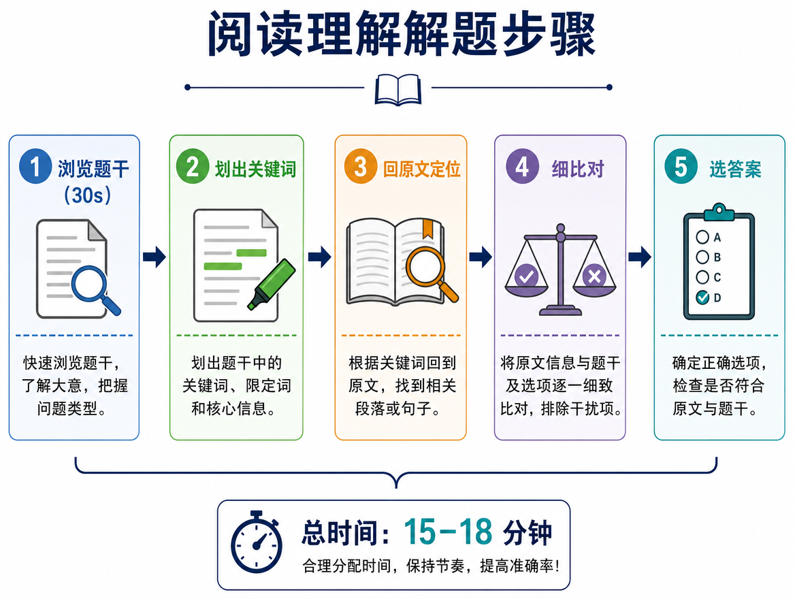
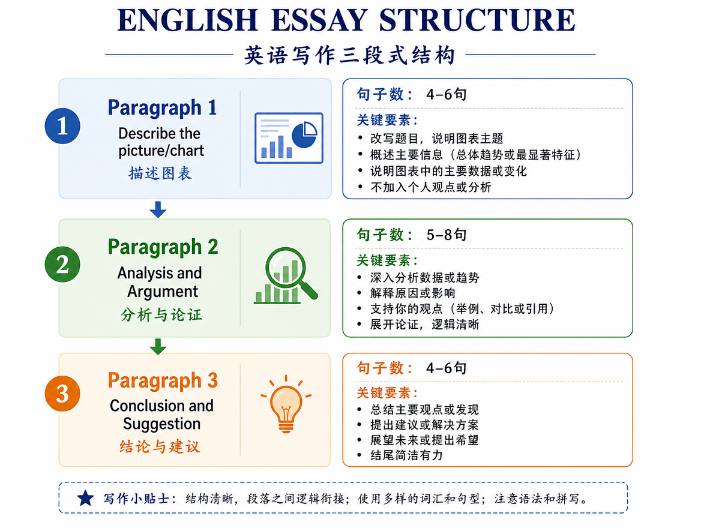
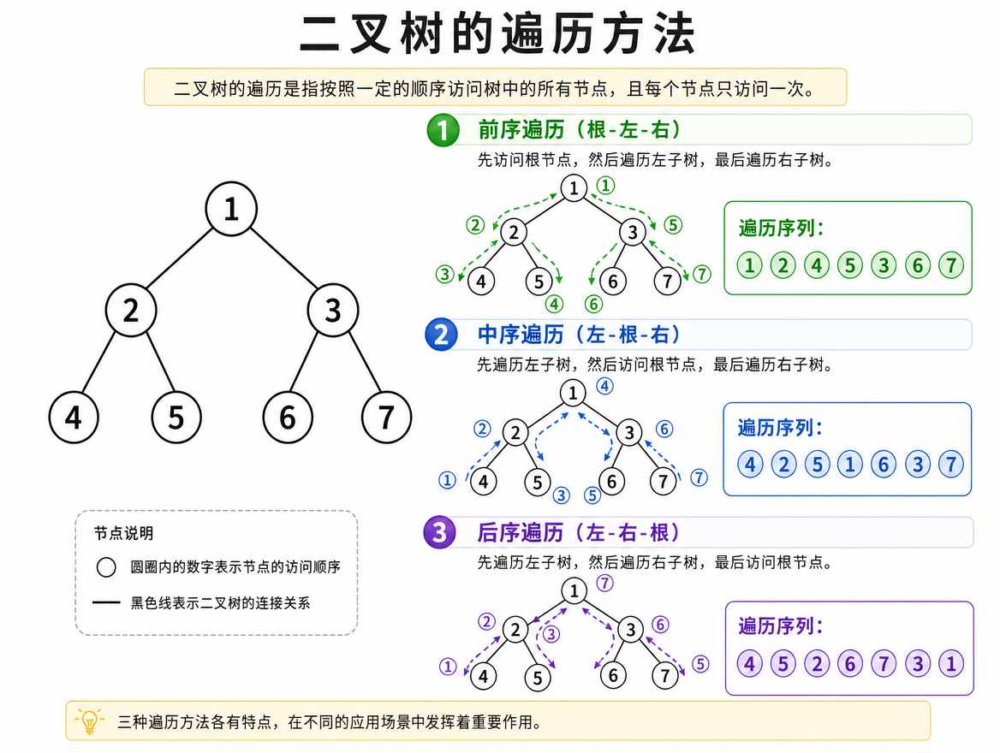
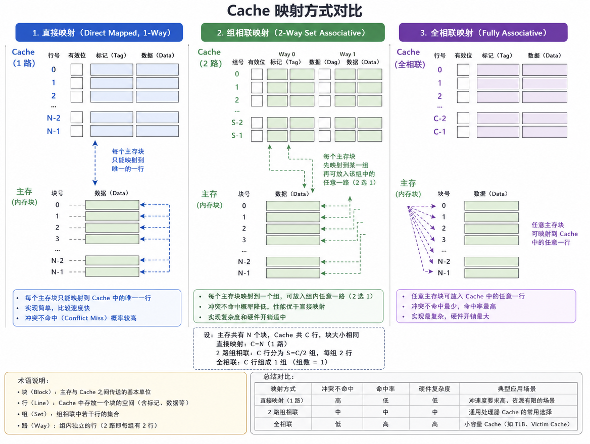

你的上岸工作台
把每一次学习，变成上岸的确定性。
一套为高目标考生整理的考研知识体系。按科目拆解、按阶段推进，今天开始稳稳拿分。
目标院校你的梦校点击右下角编辑，写上你的目标
6核心科目
69知识图解
11 年真题资料
400+冲刺目标分
从框架开始
查看全部 →知识体系
按节奏推进
打开完整计划 →三阶段备考计划
01
基础夯实期03 — 06 月
过完一轮知识体系，做对基础题，建立自己的错题本。
02
强化突破期07 — 09 月 · 当前阶段
专项刷题、真题训练，把知识点变成稳定的得分能力。
03
冲刺模考期10 — 12 月
套卷模拟、查漏补缺、考前背诵，完成最后一公里。
内容整理记录
资料范围见各页说明最近整理
真题反复出现
进入知识库 →考前高频考点 · 图解版

数学一 · 高频
微分中值定理怎么选？
看到“存在一点使等式成立”，先判断题目给的是闭区间、开区间还是导数条件，再在罗尔、拉格朗日、柯西之间做选择。
查看图解与例题 →
数学一 · 易错
多元复合函数链式法则
先画变量依赖关系，再沿每条路径相乘求和。图解能避免漏项，也能快速判断偏导数的层级。
查看图解与例题 →
英语一 · 40 分
阅读题：定位 → 同义替换
先用题干关键词回原文定位，再比较选项和原文的逻辑关系。主旨题、细节题和推理题都能套用这条流程。
查看解题流程 →
英语一 · 写作
大作文三段式结构
描述图画、解释寓意、给出评论或建议。先保证结构完整，再用主题词和连接句提高表达稳定性。
查看写作模板 →
408 · 必考
二叉树遍历与线索化
前序、中序、后序的访问顺序是树题基础。遇到遍历序列重构，先找根，再递归切分左右子树。
查看算法图解 →
408 · 综合题
Cache 映射与地址拆分
地址拆成标记、组号、块内地址三部分，结合主存块号和 Cache 行号判断命中与替换。
查看计算步骤 →